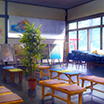 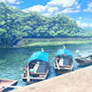 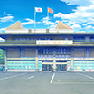 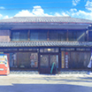 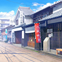 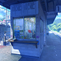 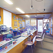 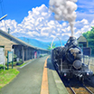 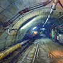 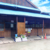 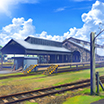 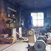 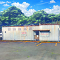 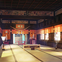 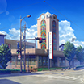 KiHa07s 御一夜铁路汤医线上唯一商业运行中的车辆，就是这辆曾归属于原硬上矿山铁路的柴油（改造）内燃机车，KiHa07s。 圆润的正面设计与复古的涂色，与专用铁路人偶玲奈一同，备受汤医线乘客们的欢迎。 隈河漂流发船点 这个隈河漂流的发船点曾是御一夜的标志性旅游资源。 在御一夜与铁路的种种纠葛中衰退的背景下，隈河漂流的客源也难免受其影响。员工人数也从巅峰时期的过百人，缩减至如今只有老板的女儿和她朋友两人的程度。 隈河漂流泊船场 隈河漂流在御一夜的泊船场。除此以外，隈河上还有上游汤医的发船点和下游渡利的泊船点。在夏季一般是在从汤医到御一夜，而在冬季水位下降，则多是从御一夜到渡利之间航行。 为迎接今后复兴的一天，这些船虽说失去了船夫，在维护上却未有丝毫马虎。 隈河第四大桥 桥梁为鲜艳红色的上承式板梁桥。虽然着重进行了景观设计，却鲜有人注目。另外，隈河上的隈河第一到第三大桥都属于前帝国铁路的肥飒线。隈河第四大桥按建设顺序其实是第五座大桥，同时也是汤医线上唯一一座铁桥。 御一夜市政府 御一夜市长与政府工作人员办公的地方，市议会议事厅也设在这里。一进门就有一块告示板，上面总是挂着孩子们练字写下的「纳税义务」四个大字。看到这个会露出惊讶神情的，那肯定是外地人没错了。 右田一酿酒厂 隈烧酒是九州，乃至日本的代表性米烧酒。最具历史的隈烧酒酿酒厂之一，便是收养了主人公右田双铁的右田家所拥有的右田一酿酒厂。而右田一酿酒厂也正如广为传唱的「隈右田女当家」一样，因代代都是由女性当家而远近闻名。 御一夜的街道 著名古城御一夜的街区被隈河一分为二，是座桥梁遍布的城镇。镇子的大半都难抵现代化的大潮，逐渐向着寻常小城镇的景致靠拢。而在手艺人街上，烧酒作坊、味增作坊等等沿街而立，至今仍保留着古时的风韵。 御一夜温泉站 曾以三台五线著称，是九州最具代表性的地面枢纽站。 现在只剩汤医线始发终点站这一个功用，班次也仅有一天两班往返而已。 站厅里设有铁路商店。其在兼具候车室职能同时，还是御一夜铁路股份公司的总部。 铁路商店 大废线后，御一夜站随之沉寂。从前帝国铁路那里接手线路的御一夜铁路股份公司在此建立了一间雅致的铁路商店，作为公司总部与旅游指南中心。可惜御一夜的市民们却只当这里是售票处而已。 汤医站站台 御一夜铁路汤医线的终点站，并无任何换乘，真正意义上的「终点」站。 这里有着一座温泉疗养设施，同时御一夜近郊唯一一所学校也坐落于此。 乘客基本上都是去上述二地之一的人，或是往返两地的上班族，游客的身影难得一见。 术仙废煤矿 当年九州产量与技术首屈一指的煤矿，然而随着空凝机的发展，煤炭需求量锐减，因而迅速衰落直至被废弃。 也许是其中的怨念作祟，在术仙废煤矿周围，空凝机变得完全无法工作。拜此所赐，汤医线才得以保留下来。 术仙废煤矿宿舍 术仙废煤矿周边当年曾经是一座能够完全自给自足的大型煤矿城镇。而当时人们居住的巨大钢筋混凝土公寓群，在半风化后已然与御一夜的自然环境融为一体，显出异样的壮观景象。 登吕流浴场 大人三百日元，小孩一百日元就可以使用的公共浴场，同时也是正宗的天然温泉浴场。 营业到夜里十一点是其独特之处，是那些因工作晚归人们休憩的港湾。 有传闻说柜台的老奶奶曾经是铁路人偶技师。 石制的机车库 明智四十四年落成，堪称御一夜温泉站标志的石制单层机车库。其中亦配有转车盘。 仔细端详可以发现建筑风格并不统一，应是随着铁路的繁荣发展，先从机车区，再到客货车区这样的顺序扩建而来。 蓑笠锻冶店 这家老铁匠经营的锻冶店，靠着手艺支持着苦苦支撑的御一夜铁路股份公司。 原本只是打些农具，但只要有图纸的话，铁路上使用的零件也照打不误。有时也会把一些活儿转给亲戚的铸造厂去做。 同时也为游客开设了制作菜刀的体验教室。 术仙煤矿废车站 当年九州产量首屈一指的煤矿的门面车站。 曾是汤医线上最繁华的车站，但随着空凝机的发展，煤炭需求量锐减，煤矿关停，车站也被废弃。 由于这一切都太过突然，周边设施还来不及拆除就落得个人去楼空。 赤井阿苏神社 要说与御一夜市民联系最为紧密的神社，那必然首推赤井阿苏神社。其建筑风格极具特色，各处节点都装饰着鬼脸，「鬼脸造」之称实至名归。 此外，这座神社拥有傲人的一千二百年历史传承与超过五百座的分社，毫无疑问是拥有极高价值的历史文化遗产。 隈元银行御一夜支行 为复兴日趋衰退的御一夜旅游业，约十年前建造了这栋有着醒目而华丽的拼花玻璃窗的支行大楼。 它既是御一夜市内唯一的银行，也是市民心中隈元银行傲慢的象征。但游客完全没有因此变多。